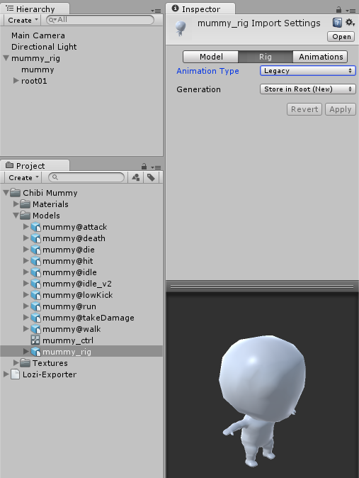
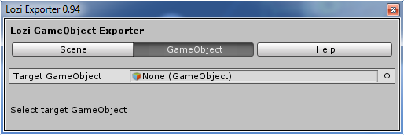
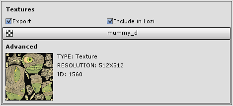
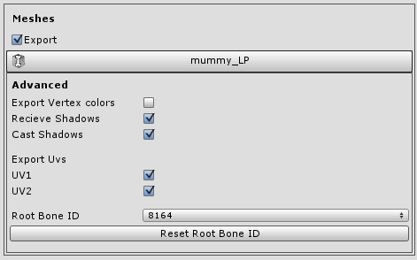

Lozi
Export from Unity3D to WebGL
How To
Before you start, here is a little insight how it works:
When choosed gameobject lozi registers gameobject's children with components that are supported and it's values iteratively
For example if you have sound source attached to gameobject, it'll register it with its audio clip
Same goes to other attached components, including colliders and Monobehaviour scripts
Exported data is parsed in lozi.js and binded to given webGL library objects
Currently it only supports three.js
- Download Lozi archive from page
- Unzip downloaded archive and add Lozi-Exporter.dll into unity project Assets folder
-
Before exporting make sure your skinned mesh has correct mesh root bone attached, remove any kind of gameobject, gun or sword for example because SkinnedMeshRenderer mostly doesn't provide correct amount of bones and Lozi will treat every gameobject inside of root as a bone
How it should be in SkinnedMesh Hierachy:
Gameobject
|
skinnedMesh
root Bone
|
Bone1...
Bone2...
Bone3...
-
Currently Lozi only supports Legacy animations, to enable legacy animation choose mesh/rig/legacy, after that choose hierarchy gameobject and add animation clips
 -
Now hit Tools/Lozi Exporter and you can choose export whole scene or specific gameobject
 -
After choosing desired object you can click on advanced dropdown button and new view show up, Lozi uses same meshes, materials, textures and animations for gameobjects with same resources and utilizes as one chunk of data
You can choose what to export, for example if in animations panel export checkbox is unchosen animations will not be exported, same goes to other panels
-
If we click on animation item in animation panel you can inspect which clips are going to export
-
In textures panel if "Include in Lozi" is checked every texture will be converted to base64 and saved with lozi file, else it will create folder with textures
you can change texture size in unity and Lozi will export in resolutions you choose

Same goes to sounds panel, if "Include in Lozi" is checked every sound will be converted to base64 and saved with lozi file, else it will create folder with sounds
it doesn't matters if you change compression or bitrate in unity, it'll export original file

if "Include in Lozi" is unchecked in textures and sounds than, sounds and textures will be exported to folder [your object name]_Data

-
You can choose material type for all materials or click on material item and choose type for material individually
In material side field you can change material side, front, back or double sided
In item dropdown every material property show up if it has a value assigned, if you have lightmaps baked, and mesh renderer uses lightmaps, it will show up in material properties list
You can choose texture for opacity map in transparent texture field, only texture properties of material will be available if they aren't empty

-
In meshes panel on item click you can choose advanced options for mesh
If mesh is skinned additional field will be available, where you can choose bone hierarchy from different skinned meshes that are exported along, reset will reset to default assigned bone hierarchy
This feature utilizes file size, also you can use several bone hierarchy on multiple meshes, if bone hierarchy matches
 -
In Hierachy panel you can view whole hierarchy of object, to close or open permanently use Close All/Expand All Button
If Export Scripts is checked and gameobject or it's children has any Monobehaviour, for example if in script field assingned any variable that isn't exported with object, than it will store only instance id
Same goes to colliders, but only Box, Sphere and Capsule colliders are exported

-
That's it! now click on "Select path" and choose desired destination, than click EXPORT

-
After exporting you need a web serever
In html include Lozi.js after you include three.js library
Set up three.js with scene, camera and lights(if you don't included lights in exported package)
than use this simple function to load lozi package:
var loziobject; Lozi.load('your_awesome_thingy.js',function(obj) { loziobject = obj.object; scene.add(loziobject); }, onProgress, onerror);returned object "obj" contains 2 parameters:
- object - Generated Object which extends engines object by type
- data - data object which includes everything from generated geometries to downloaded textures -
and that's it, now you can view your exported object if you done everything right
You can view examples to better understand how it's easy to use
Every engine differs, every exported mesh with texture will be exactly same as in unity3D but difference may be huge in lighting, so take time and make experiments to change material types and light variables